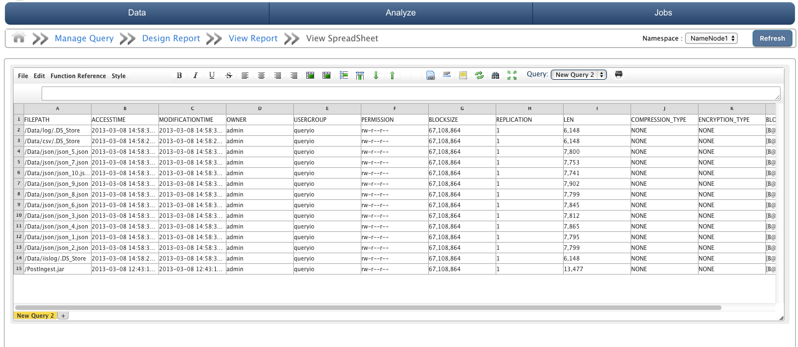

This chapter explains how to use excel like spreadsheet viewer with QueryIO .
QueryIO provides support for spreadsheet viewer to process and further analyze the query results. Spreadsheet viewer provides a excel like spreadsheet with all the layers of business intelligence.
Result of all the queries executed can be viewed in SpreadSheet Viewer for further processing.
Spreadsheet viewer allows sheet creation, viewing, and editing processes. It also supports Undo & redo, Merge-able cells, Easy creation of custom formula functions and variables, full screen mode for better viewing, printing reports and many more features.
